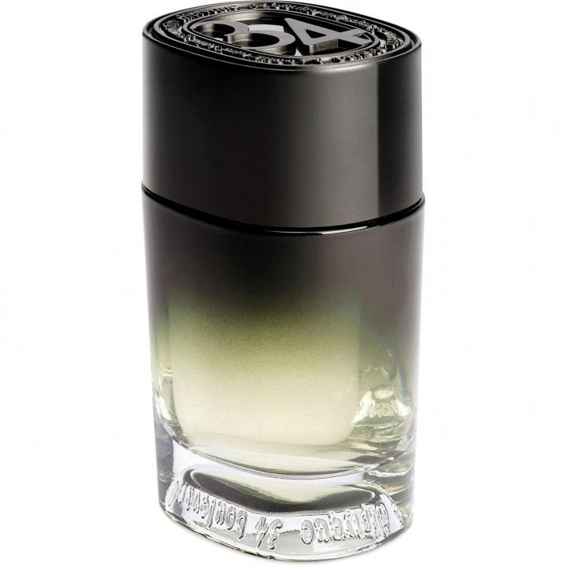
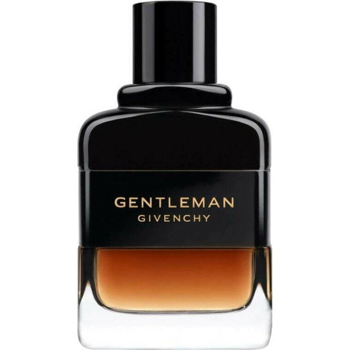
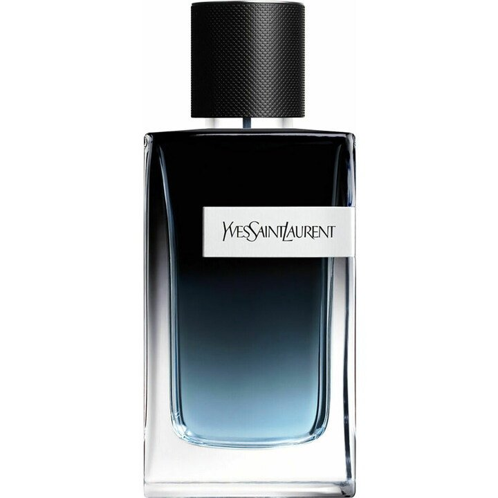
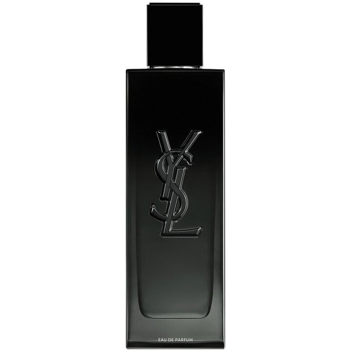
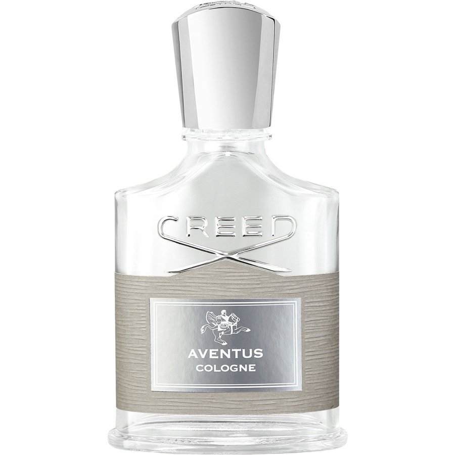
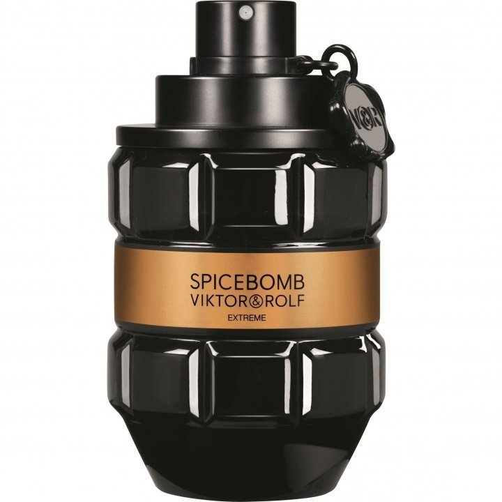
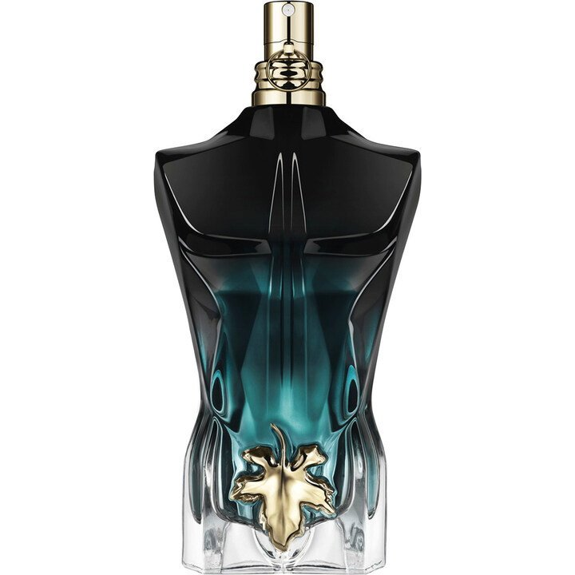

What is on my shelf and when I wear each bottle. I am a big fan of Fragrantica: I like reading the note pyramids there and working out why a composition smells the way it does. Some of these are daytime scents, some only come out at night, and most of them belong to a particular season.
Bottles 7Cold weather Gentleman Réserve Privée, Spicebomb ExtremeWarm weather MYSLF, Aventus Cologne, Le Beau Le ParfumAny time Y

Diptyque
34 Boulevard Saint Germain
Eau de Parfum
Top blackcurrant leaf, pink pepper, citrus. Heart rose, cinnamon, clove. Base amber and patchouli accord, sandalwood, vanilla.
Meant to smell like the inside of Diptyque's original shop: green and a little spicy on top, then rose and warm woods. It is the most unusual bottle I own and the one that is hardest to pin to a single note. I reach for it in the daytime when the weather is mild.
Wear DaySeason Spring, fall

Givenchy
Gentleman Réserve Privée
Eau de Parfum
Top bergamot. Heart whisky accord, chestnut, iris. Base benzoin, cedar, vetiver, amber.
A boozy, nutty scent built around a whisky accord, with iris keeping it smooth instead of syrupy. Warm and a little dressed up, so it works best on cold evenings.
Wear NightSeason Fall, winter

Yves Saint Laurent
Y
Eau de Parfum
Top apple, ginger, bergamot. Heart sage, geranium, juniper. Base tonka bean, amberwood, cedar, olibanum.
A fresh, clean opening that settles into something sweeter and woodier. It is the safest pick on the shelf: it fits the office, a night out, and any season.
Wear Day or nightSeason All year

Yves Saint Laurent
MYSLF
Eau de Parfum
Top Calabrian bergamot, bergamot leaf. Heart Tunisian orange blossom. Base Ambrofix, patchouli, woods.
Orange blossom over a clean, slightly musky wood base. Bright and soapy in a good way, and it stays close to the same smell from start to finish. Best in warm weather during the day.
Wear DaySeason Spring, summer

Creed
Aventus Cologne
Eau de Parfum, despite the name
Top mandarin, ginger, pink pepper. Heart patchouli, vetiver, sandalwood. Base musk, birch, tonka bean, styrax.
A lighter, more citrus-driven relative of the original Aventus. The ginger and mandarin make it sharp and fresh up top, with a quiet smoky wood underneath. This is my hot-weather daytime choice.
Wear DaySeason Summer

Viktor&Rolf
Spicebomb Extreme
Eau de Parfum
Top grapefruit, black pepper, pimento. Heart cinnamon, cumin, saffron. Base tobacco, vanilla, amber.
Tobacco and vanilla with a lot of warm spice. It is the heaviest and longest-lasting bottle I have, and it only really makes sense when it is cold out. Strictly a winter night scent.
Wear NightSeason Winter

Jean Paul Gaultier
Le Beau Le Parfum
Eau de Parfum Intense
Top pineapple, iris, cypress, ginger. Heart coconut, woody notes. Base tonka bean, sandalwood, amber, ambergris.
Coconut and tonka bean again, but deeper and creamier than the original Le Beau, with pineapple on top and sandalwood and amber underneath. Sweet and tropical without being light, which makes it a good fit for warm summer nights.